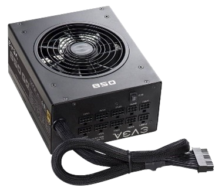

PORTFOLIO NO.4
Introduction to Computer Hardware
This refers to the tangible components of a computer system that you can touch, see, and interact with physically. These components work together to process data and run software.
Basic Components
| Component | Purpose | Image |
|---|---|---|
| Motherboard | Main circuit board connecting all other components | |
| CPU | The brain of the computer, executing all instructions | |
| RAM | Temporary storage holding data and instructions for quick access | |
| HDD/SSD | Storage for long-term data retention | |
| Power Supply | Provides electrical power to the computer |  |
| GPU | Renders images, videos, and animations |
Key Components of Motherboard
CPU Socket
The CPU (Central Processing Unit) socket is a specialized connector on the motherboard where the processor is installed, facilitating the interface between the CPU and the motherboard.
RAM slots
- RAM (Random Access Memory) slots are connectors on the motherboard for installing memory modules (RAM), providing temporary storage and fast access to data and instructions for the CPU.
Expansion slots
TExpansion slots, such as PCI (Peripheral Component Interconnect) and PCIe (PCI Express), allow for the installation of additional expansion cards, such as graphics cards, sound cards, and network adapters, to enhance system capabilities and functionality.
Connectors and Ports
- Motherboards feature various connectors and ports, such as USB (Universal Serial Bus), HDMI, audio jacks, and networking ports, for connecting external devices, peripherals, and interfaces to the computer system.
Types of Memory
1. RAM (Random Access Memory)
- DDR SDRAM (Double Data Rate Synchronous Dynamic RAM): - DDR SDRAM is a type of volatile memory commonly used in computers for temporary data storage. It is synchronized with the system clock and transfers data on both the rising and falling edges of the clock signal, providing higher bandwidth compared to its predecessor, SDR SDRAM.
- SRAM (Static Random Access Memory) - SRAM is another type of volatile memory that differs from DRAM (Dynamic RAM) in that it uses latching circuitry to store each bit of data. This eliminates the need for constant refreshing, making SRAM faster but more expensive than DRAM.
- DRAM (Dynamic Random Access Memory): DRAM is a type of volatile memory that requires constant refreshing to retain data. It is widely used as the main system memory in computers, providing a balance between cost, density, and performance
2. ROM (Read-Only Memory)
- Mask ROM: Permanent data is "masked" onto the chip during manufacturing and cannot be changed.
- EPROM (Erasable Programmable Read-Only Memory): Can be erased and reprogrammed using ultraviolet light
- EEPROM (Electrically Erasable Programmable Read-Only Memory): Can be electronically erased and reprogrammed.
Storage Devices
HDD (Hard Disk Drive):
HDDs are traditional storage devices that use magnetic storage to store and retrieve data. They consist of spinning disks (platters) coated with a magnetic material, read/write heads, and a motor to spin the disks.
SSD (Solid State Drive):
SSDs use NAND-based flash memory for data storage. Unlike HDDs, SSDs have no moving parts, which provides several advantages in terms of speed, durability, and energy efficiency
Hybrid Drives (SSHD):
Hybrid drives combine elements of both HDDs and SSDs in a single device. They feature a traditional HDD with a smaller SSD cache, allowing for a balance between capacity and performance.
Peripherals
Input Devices
- Hard wands data to the computer, such as keyboards, mice, and microphones. These devices enable user interaction with the system, turning actions into data for processing.
. Output Devices
Hardware that displays or outputs data from the computer, including monitors, printers, and speakers.
Networking Hardware
Devices like routers, modems, and network cards allow communication between computers over networks, facilitating internet and local network connectivity
International Communication System
Buses
Data within the computer that transport data between components. For example, the PCI bus connects the CPU with expansion cards, while the SATA interface connects the motherboard with storage devices. Efficient bus architecture is crucial for fast data transfer.
BIOS/UEFI
Basic Input/Output System (BIOS) and Unified Extensible Firmware Interface (UEFI) are firmware that initialize hardware during boot-up and load the operating system. UEFI is more modern than BIOS, supporting larger drives and faster boot times.
Chipsets
Located on the motherboard, the chipset manages data flow between thry, and peripherals. The Northbridge component of the chipset connects the CPU to high-speed components (RAM and GPU), while the Southbridge connects to slower peripherals like USB ports.
Software
Software is the set of instructions that tells hardware what to do, enabling users to perform a range of tasks on digital devices. It can be categorized into different types based on its function and use, including system software, application software, and development software. Below is a deep dive into these types, as well as key processes in software development and trends shaping the field.
Categories of Software
System Software:
- Operating Systems (OS):The OS is a core piece of system software that manages computer hardware and provides a platform for applications. Examples include Microsoft Windows, macOS, Linux, and Android. Operating systems manage resources like the CPU, memory, and storage, and they also handle input/output operations, file management, and security
- Utility Software::These are tools that help in maintaining, analyzing, and optimizing a computer. Examples include antivirus software, disk cleaners, and backup tools. They work to enhance system performance, improve security, and ensure data integrity.
- Firmware:Firmware is specialized software embedded directly into hardware devices, like routers, printers, and even microwaves. It provides low-level control for the device's specific hardware, enabling it to function according to its design.
Application Software:
- Productivity Software: This includes applications that help users complete tasks efficiently. Microsoft Office Suite (Word, Excel, PowerPoint), Google Workspace, and project management tools like Trello and Asana are common examples.
- Media and Design Software:Tools like Adobe Photoshop, Illustrator, and Premiere Pro are widely used in the fields of graphic design, video editing, and digital art. These applications allow users to create and manipulate multimedia content.
- Business Applications:These include specialized software such as Customer Relationship Management (CRM), Enterprise Resource Planning (ERP), and point-of-sale (POS) systems that streamline various business operations and facilitate decision-making.
- Educational Software: Applications like Khan Academy, Duolingo, and Moodle are designed to facilitate learning and teaching, providing an interactive, engaging environment for both students and educators.
System Software:
- Programming Languages and Compilers:Tools like C++, Java, Python, and their respective compilers are essential for writing and executing code. These languages allow developers to create software tailored to specific tasks or functions.
- Integrated Development Environments (IDEs):IDEs like Visual Studio, Eclipse, and PyCharm provide a comprehensive environment for coding, testing, and debugging, which simplifies the software development process
- Version Control SystemsSoftware like Git and platforms like GitHub and GitLab help developers track changes, collaborate on projects, and manage code history effectively, making them essential for collaborative and large-scale projects.
Analysis or Reaction
As a computer science student, I recognize that understanding the fundamentals of both hardware and software is essential in grasping how modern technology operates across various fields. Hardware and software form the core of computer systems and work in tandem to enable efficient processing, storage, and execution of data. While hardware refers to the physical components of a computer system, such as processors, memory, and storage devices, software encompasses the programs and applications that run on these components, from operating systems to specialized applications. This synergy between hardware and software is critical in delivering functionality and optimizing performance in diverse real-world applications.
Hardware serves as the backbone of any computing system, providing the infrastructure required to execute software instructions. It includes elements like CPUs, which handle computation tasks; RAM, which provides quick access memory; and storage devices, which hold data and software. Different institutions rely on specialized hardware to meet their needs. For instance, educational institutions use interactive whiteboards and student workstations to facilitate learning, while healthcare facilities employ advanced diagnostic machines like MRIs and patient monitoring systems to deliver medical care. Financial institutions utilize high-security servers and ATMs to ensure reliable banking operations, reflecting how hardware adapts to specific requirements across sectors.
Software, on the other hand, enables the customization and functionality of hardware to suit the needs of users and institutions. Software includes operating systems that manage hardware resources, productivity applications that assist users in performing tasks, and enterprise applications that help institutions manage data and workflows. In schools, learning management systems and educational software enrich students' learning experiences, while in healthcare, electronic health records (EHR) and telemedicine platforms streamline patient care. Government agencies use software for data management and e-Government portals to facilitate public access to services. These examples illustrate how software provides flexibility, efficiency, and accessibility to various sectors, meeting the unique demands of each institution.
In conclusion, understanding the relationship between hardware and software, as well as their applications across institutions, is vital for any student in computer science. These elements collectively power the technology that shapes our daily lives and supports critical functions in education, healthcare, finance, and governance. Learning about the implementation of hardware and software across sectors prepares students to apply technological solutions in specialized fields, bridging the gap between theoretical knowledge and practical application.